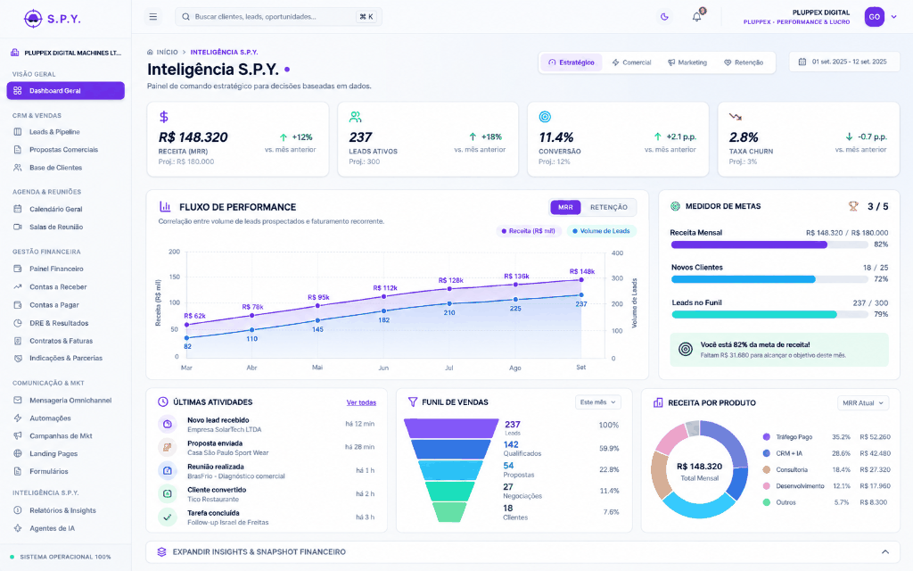

Hoje
Eu preciso saber e fazer tudo.
S.P.Y. CRM | Autonomous Fundador
Gestão e vendas da sua empresa de forma tão simples quanto mandar uma mensagem no WhatsApp.

A dependência operacional
Muitas empresas crescem, mas a operação continua presa ao fundador. O crescimento acontece no negócio e a execução continua na mesma pessoa.
Hoje
Eu preciso saber e fazer tudo.
Autonomous Fundador
Eu preciso saber o que importa e decidir o que realmente move a empresa.
A arquitetura
O S.P.Y. CRM organiza os dados da sua empresa e dos seus clientes. A Aurora interpreta esses dados, analisa situações, recomenda e executa ações — e opera processos de forma autônoma. Você comanda pelo WhatsApp.
Modelo de funcionamento
O painel do fundador
O fundador não precisa percorrer dezenas de telas para entender a empresa. Ele pergunta. A Aurora consulta os dados do S.P.Y. CRM e devolve informação, análise, alerta e ação — e pode operar o CRM a partir do pedido. Do celular, onde você já está.
E ela não espera ser chamada: a Aurora trabalha de forma autônoma e avisa o fundador quando algo merece atenção.
A principal atenção está em [cliente] — sem interação há [X] dias, com proposta enviada.
Agentes comerciais autônomos
Os agentes conversam com clientes por texto e por áudio, compreendem áudio, qualificam, identificam intenção de compra e executam o que precisa ser feito — dentro do mesmo CRM em que a sua operação vive.
01
02
03
O que você passa a ter
O Autonomous Fundador inclui a estrutura completa do S.P.Y. CRM e da Aurora — comercial, automação e financeiro na mesma visão de operação.
CRM
IA
FINANCEIRO
O módulo financeiro não é um produto à parte. Ele existe porque comandar a empresa exige ver o comercial e o financeiro na mesma operação.
Filosofia Pluppex
Não prometemos ferramentas. Prometemos uma operação.
Toda empresa tem potencial para crescer. Poucas possuem uma operação capaz de sustentar esse crescimento. É essa operação que nós construímos e operamos.
Parceiros
A condição
O Autonomous Fundador é o mesmo produto do plano Autonomous, em uma condição criada para os primeiros fundadores que entram nesta fase de evolução do S.P.Y. CRM.
Autonomous Fundador
Condição especial para os primeiros fundadores
Condição padrão do Autonomous: R$ 3.997/mês
Implantação R$ 3.000 — pagamento único
10Empresas
O Autonomous Fundador é uma condição especial criada para um grupo limitado de empresas que participarão desta fase inicial da evolução do produto. São 10 posições — é uma limitação da condição comercial, não um argumento de venda.
Seu papel não é operar cada detalhe da empresa.
Seu papel é decidir o que merece a sua atenção.